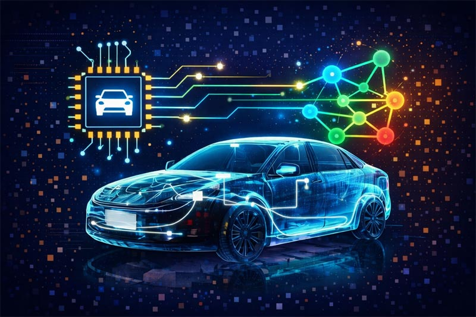
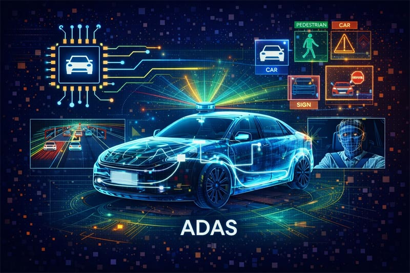
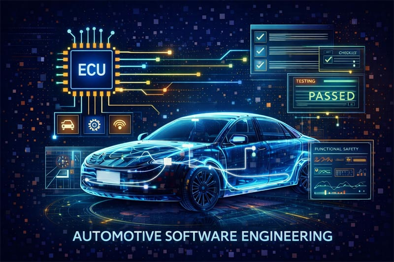
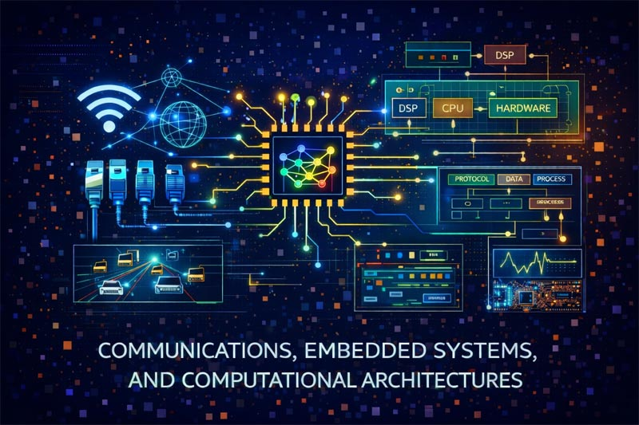

Automotive Software
Modern automotive systems increasingly rely on advanced software architectures, intelligent algorithms, and data-driven computational methods. My work in automotive software development focuses on the design, implementation, testing, and validation of complex embedded and AI-assisted systems. These contributions span perception algorithms, driver assistance technologies, ECU software engineering, communication protocols, and system-level validation frameworks.

Automotive topics:
- Autonomous Driving / ADAS / Perception
- Automotive Software / ECU / Testing / Validation
- Communications / Networks / Data Transmission / Embedded Systems / FPGA / Low-Level Systems
Autonomous Driving / ADAS / Perception
Automotive perception and Advanced Driver Assistance Systems (ADAS) focus on enabling vehicles to interpret their surroundings, recognize relevant objects, and support intelligent driving decisions. These technologies integrate computer vision, sensor fusion, and machine learning techniques to enhance vehicle awareness, safety, and automation. The publications listed in this section reflect my work on perception algorithms, driver monitoring systems, predictive modeling, and AI-driven assistance methodologies. The studies emphasize algorithmic design, real-time processing, and intelligent analysis of dynamic traffic environments.

Automotive Software / ECU / Testing / Validation
Automotive software engineering involves the development, testing, and validation of complex embedded systems operating within Electronic Control Units (ECUs). These systems require robust architectures, reliable communication mechanisms, and rigorous verification strategies to ensure functional safety and system reliability. The publications listed in this section reflect my work on ECU software design, automated testing frameworks, validation methodologies, and system-level analysis. The studies emphasize reliability, performance, and structured evaluation of automotive software infrastructures.

Communications / Networks / Data Transmission / Embedded Systems / FPGA / Low-Level Systems
Communications, embedded systems, and low-level computational architectures form the technological foundation of modern intelligent and distributed systems. These areas focus on reliable data transmission, protocol design, hardware–software integration, and performance-oriented system optimization. The publications listed in this section reflect my work on communication mechanisms, embedded platforms, FPGA-based solutions, and system-level modeling. The studies emphasize efficiency, reliability, and robust design of complex computational and electronic infrastructures.
